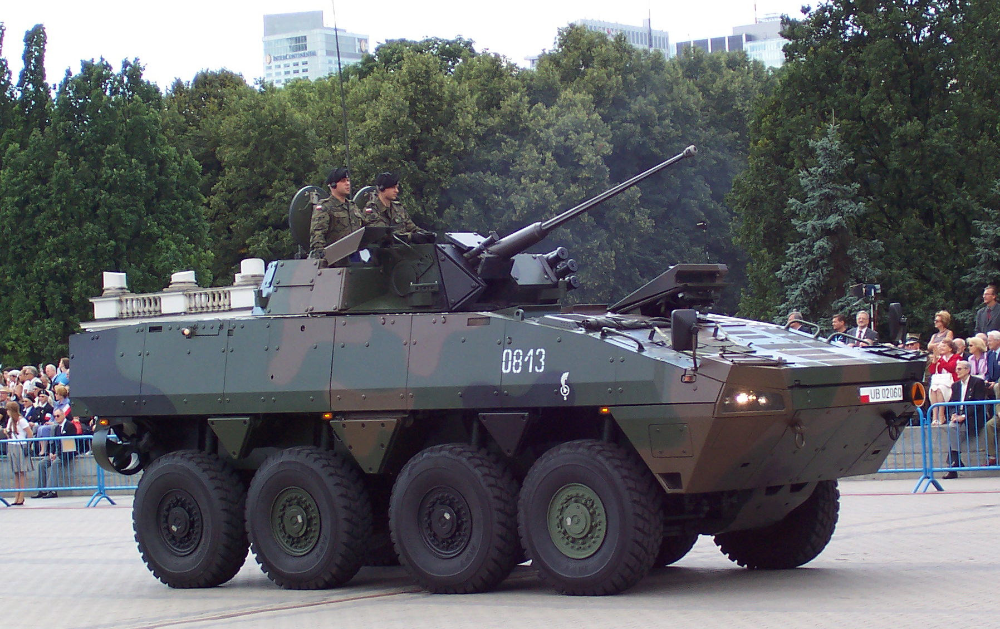
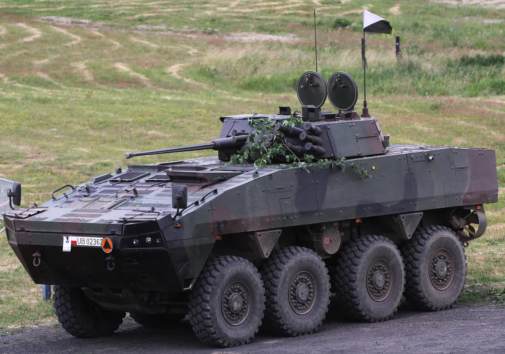

KTO Rosomak


Rosomak – kołowy transporter opancerzony (KTO), produkowany w wielu wersjach zabudowy i sukcesywnie modyfikowany w Polsce w oparciu o licencyjną wersję bazową pojazdu AMV XC-360P, konstrukcji fińskiej firmy Patria. Znajduje się na uzbrojeniu Sił Zbrojnych RP.
W podstawowej wersji uzbrojony jest w armatę kalibru 30 mm w wieży Hitfist.